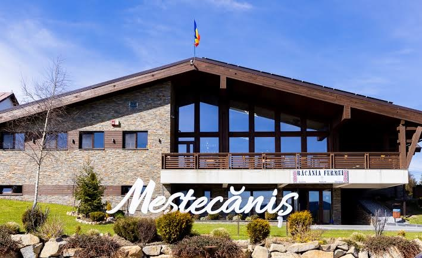

Mountain air. Bucovinian stories.NOT JUST A PLACE ON THE MAP
A mountain village.
A whole lot
of heart.
Set in Romania’s Bucovina region, Mestecanis is a place to slow down and take in the Carpathian foothills. Village lanes lead past gardens and wooden gates, while forest paths and open meadows begin just beyond home.
Discover the rhythms of village life, the landscapes of the Carpathians, and the traditions that make Bucovina distinctive. We’d love you to experience it at your own pace.
Get to know the village